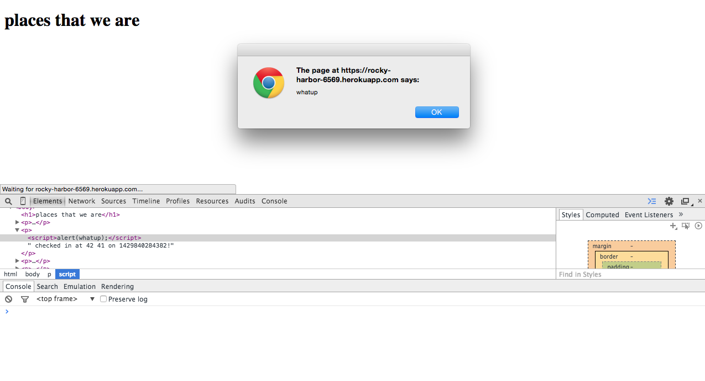

Security and Privacy Assessment
Sam Broner - April 24, 2015
Introduction
This report outlines the vulnerabilities to security in the "Marauder's Map". This web app was developed by Kyle Slinger for Assignment 2 and Assignment 3 in Tufts' Web Programming course. The Marauder's Map is web application that tracks the location of the users that log into the system. This application has a front-end that displays the locations of its users using Google Maps. The information from this app can also be accessed through a plaintext site.
The site is currently vulnerable to multiple forms of disruption that would reduce the usability for users. Throughout this report, the issues will be documented and remedies will be proposed.
Methodology
The web app was tested in two significant ways. The first tests were performed on a "black-box". This technique is similar to how an attacker might try to disrupt the website. During the black-box tests, I did not look at the code and simply attempted multiple attacks. The following tests were performed after looking at the code to find logical errors or more specific vulnerabilities.
Abstract of Findings
This website is not particularly secure. The application can be hacked in multiple ways by giving the system malicious input. During black-box testing, the site was broken in 3 ways. The site lets an attacker break the UI through script injection and interrupt the UI by changing the DOM. Furthermore, the DB can be easily slowed down by sending repeating curl commands from multiple sources. Lastly, after pushing approximately 180 MB of text into the database, the site refused to load. All of these issues stem from the way in which the database stores information. As of yet, no security issues have been found with the Google Maps front end, perhaps because that code has been tested by a massively significant audience.
Issues Found
Cross Site Scripting
The cross site scripting vulnerability affects the GET call to "https://rocky-harbor-6569.herokuapp.com/" and the input of text into the system.
Severity: Severe
This flaw makes the Marauder's Map extremely susceptible to malicious attacks. Any hacker could push code to the server using a POST and that code will be returned and run upon a GET call.
Text pushed to the server using a POST is not checked for scripts or malicious content. This text could include the HTML tags that indicate a script and could include JavaScript within these HTML tags. The JavaScript could then be loaded when the HTML is displayed on the page.
By using the following curl command.
curl --data "login=<script>alert('whatup');</script>&lat=42&lng=41" https://rocky-harbor-6569.herokuapp.com/sendLocation
a script could be inserted into the DOM as it is loaded. This particular script would show the following alert
This issue could easily be solved by removing characters that are used in HTML. By escaping <, >, etc. the script will not be loaded.
Overloading the Server
Affects the Node Server and both GET commands
Severity: Medium
After running a script that pushed considerable data into the database, the server stopped responding appropriately.
The following script was run
for ((i=0; i<=1000; i++));
do
curl --silent --data "login=TEXT"$i"&lat=42&lng=41&bob=tim" https://rocky-harbor-6569.herokuapp.com/sendLocation > /dev/null
done
which pushed nearly 180 MB into the database through the POST command. This does not completely crash the database, but it does stop new data from entering and breaks the GET commands.
Once this size was reached, no more data could be added to the database. Furthermore, the get command only responded with the following:
This issue could be fixed by simply having more space. However, the issue could also be solved by not allowing one ip to post repeatedly to the webapp.
Silent Accept of Bad JSON Data
POST commands accept invalid JSON and put it in the server.
Severity: Low
When text is POSTed to the server it is not checked for validity before it is inserted into the database. This means that invalid entries can be put into the server. These results will never result in a good result on the front end.
Curl commands were run that sent bad data to the server. There are many examples of the command, but one example is the following:
curl --data "login=patfitz&lat=42&lng=tom" https://rocky-harbor-6569.herokuapp.com/sendLocation
This command sends an invalid longitude to the server. This cannot be formatted into a number, which creates an invalid entry. Other curl commands can exclude keys or give other types of invalid values. These commands are accepted silently and are not rejected nor ignored.
This could be fixed by requiring that each input has a properly formated JSON input. If the longitude or latitude does not result in a number, the JSON should not be put into the database. This can be easily tested in the server code.
Conclusion
The security vulnerabilities in this implementation of the Marauder's Map make the web app easily broken and manipulated. If Kyle Slinger follows the recomendations given in this report, the site will be much less vulnerable to basic attacks. However, there will presumably still be issues that require further research and work to fix.